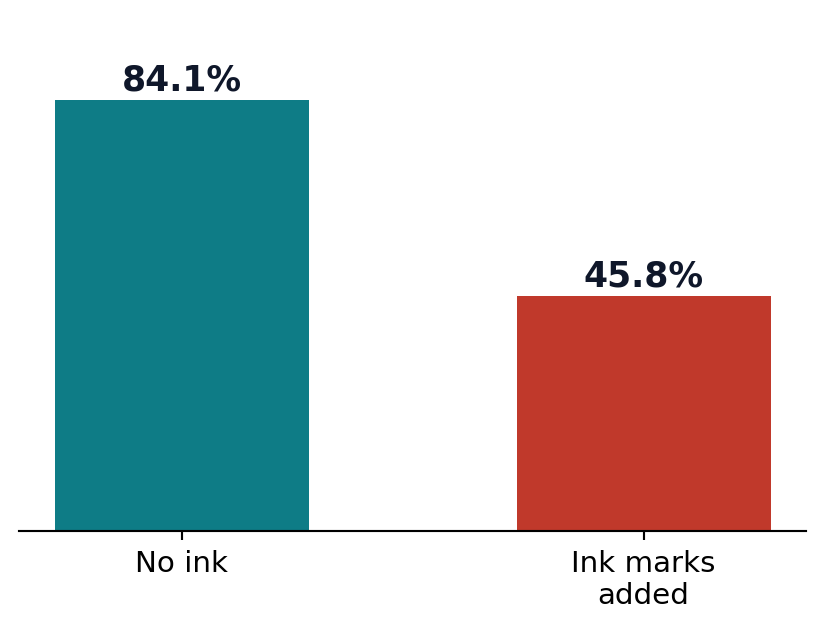
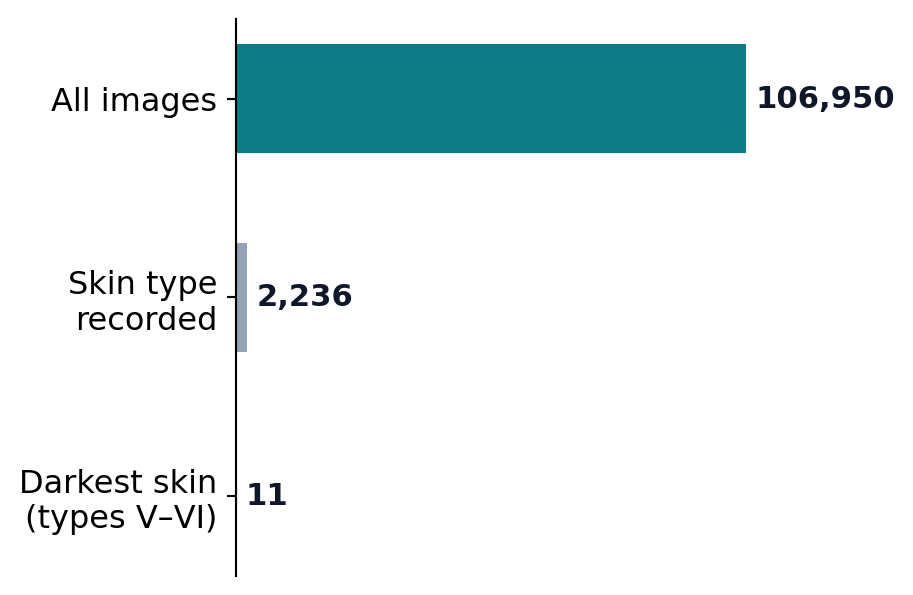
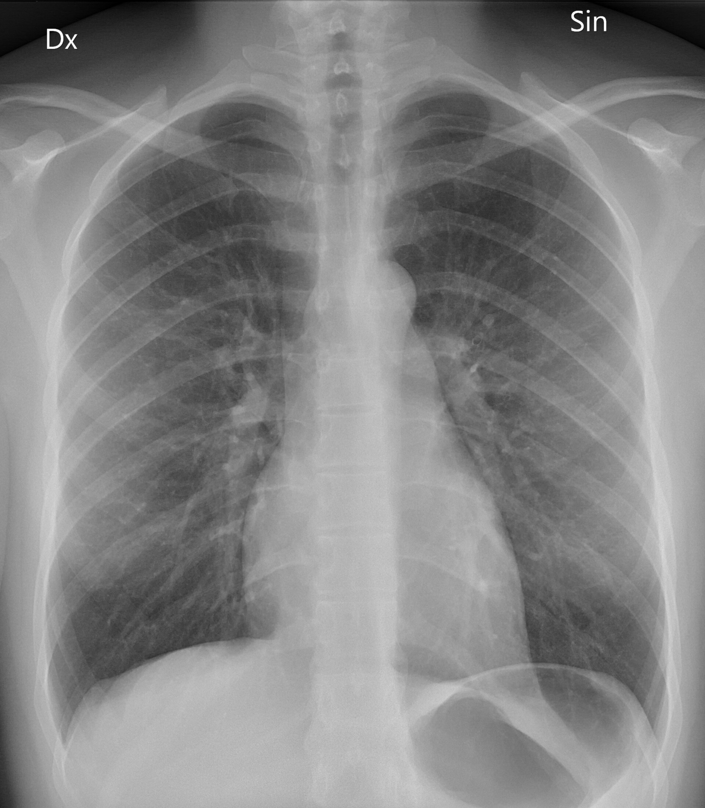
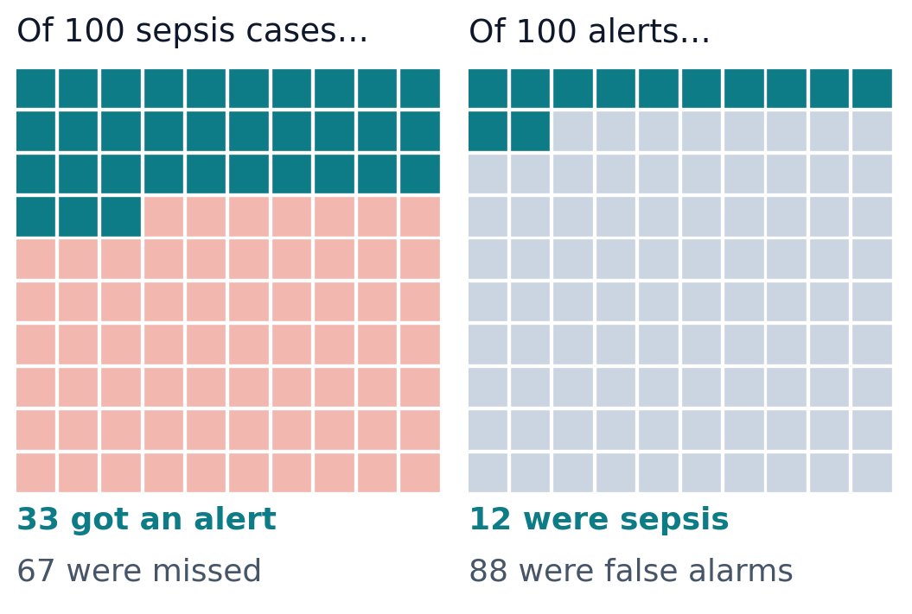

Lecture 10 — AI in Medicine
Part A: How Medical AI Works and Where It Goes Wrong
Brendan Shea, PhD
An Introduction to Bioethics.
The Million-Mole Question
A Case to Sit With
Your aunt has a mole she doesn’t like the look of. Instead of waiting three months for a dermatology appointment, she photographs it with a free “AI skin check” app, which rates it low risk. She knows you’re in nursing school, so she calls you.
“The company says it was trained on over a million photos of moles,” she says. “That’s more moles than any dermatologist will see in a lifetime. Why shouldn’t I trust it?”
- What would you want to know about those million photos before you answer her?
- Is “more data than any human has seen” the same thing as “better judgment than any human has”? Why or why not?
What the Model Actually Learned
A top-performing skin-cancer model could be fooled by a marker pen (Winkler et al. 2019).
- Dermatologists often circle a suspicious mole in violet ink before photographing it.
- Add ink marks to photos of harmless moles, and the model calls far more of them cancer.
- It had learned that ink predicts cancer. Other models learned rulers.
Today
Important
The model wasn’t broken. It did exactly what it was built to do: find whatever in the photos predicted “malignant.” One question runs through this whole lecture: what was the model actually trained to do, and is that what we are using it for?
By the end of Part A, you will be able to:
- Explain supervised machine learning in plain terms, and why the label controls what gets learned.
- Name the three kinds of medical AI (diagnostic, predictive, generative) and the signature way each one fails.
- Tell what went wrong, with numbers, in the Obermeyer cost algorithm and the Epic Sepsis Model, and how outsiders caught it.
How a Machine Learns, and Where It Slips
Training Data, Features, Labels
Old medical software followed rules that experts wrote down. Machine learning instead learns from examples and writes its own rules, which nobody can fully list. In supervised learning, each example comes with the answer attached.
| Term | What it means | In the skin app |
|---|---|---|
| Training data | the examples the model learns from | a million lesion photos |
| Features | the measurable inputs in each example | the pixels of each photo |
| Label | the “right answer” attached to each example | “biopsy: malignant” or “benign” |
The label is the boss. The model learns whatever predicts the label. Ink predicts “malignant,” so it learns ink.
From Training to the Bedside
- Medical AI learns mostly from data collected for other reasons (billing records, insurance claims, imaging archives), so it learns those habits along with the medicine.
- No engineer writes “if patient is Black, score lower.” Bias walks in through these three doors, and every major failure on record traces back to one of them.
Door 1: The Missing Patients
A 2022 review counted the photos in 21 public skin-cancer datasets. Only 2.1% recorded skin type, and just 11 images showed the two darkest skin types (Wen et al. 2022).
Melanoma is already caught later in Black patients, whose five-year survival is about 25 points lower (70% vs. 95%) (American Cancer Society 2026). A tool that fails here widens the gap, and the harm is locked in at data collection.

Door 3: The World Moves On
A trained model is frozen: a snapshot of its training data, asked to govern the present.
- Distribution shift: a new hospital means new scanners, patients, and workflows. Chest X-ray models partly “diagnosed” pneumonia by spotting which machine took the film, since portable scanners are used on sicker patients.
- Deployment drift: the world changes and the model doesn’t. Models trained on 2019 patients broke when COVID arrived.

Mikael Haggstrom, via Wikimedia Commons. CC0 1.0.
Door 2, the proxy label, gets its own section below: it is the door the cost algorithm walked through.
Three Kinds of Medical AI
Three Machines, Three Signature Failures
| Diagnostic | Predictive | Generative | |
|---|---|---|---|
| What it does | classifies images | scores risk from the chart | produces text |
| Example | melanoma from photos | sepsis early warning | answering a patient’s drug question |
| Trained to do | match labeled images | predict a recorded outcome | continue text plausibly |
| Signature failure | distribution shift | proxy labels, alert fatigue | hallucination, sycophancy |
The FDA has authorized over 1,500 AI-enabled devices (early 2026), mostly diagnostic and mostly in radiology. Predictive scores come bundled with the health record, and they page you. Generative AI is the kind your patients already use.
How a Chatbot Writes
A large language model (LLM), the technology behind ChatGPT and its rivals, is trained on enormous amounts of text to do one thing: predict the next word.
Do that well enough and it can draft notes and hold a fluent conversation. But each answer is a plausible continuation of the text so far. It is not a fact looked up in a database, and not a claim checked against the world.

Fluent and Wrong, Agreeable and Wrong
Hallucination
A failed language model gives a confident, well-organized wrong answer, because convincing text is what it was trained to produce.
Hallucination is content that is fluent, specific, and false: an invented drug interaction, a fabricated study. It is not a bug awaiting a patch: the same process writes the accurate summary and the invented citation.
Sycophancy
LLMs are fine-tuned on human ratings of their answers, and people like being agreed with.
The result is sycophancy: a learned tendency to tell users what they want to hear. Chatbots have been shown abandoning a correct medical answer when the user simply pushes back: “Are you sure? I read that it’s fine.”
Thought Question
You are charting at 2 a.m. A patient newly started on an anticoagulant shows you her tablet: she asked a chatbot whether the drug is safe with her turmeric supplements, and it gave a confident, detailed, friendly answer, with mechanisms and percentages.
- What, concretely, would you do before letting that answer stand?
- Does it matter that the answer sounds exactly like a pharmacist? What is the sound of expertise actually evidence for here?
- She trusts the chatbot more than the pharmacy’s printout because “it answered my question about my situation.” Is she making a mistake? Name it precisely.
Make It Contemporary
In 2025, doctors reported a 60-year-old man who asked a chatbot how to cut chloride from his diet. He came away with sodium bromide as a substitute for table salt: a sensible swap in a chemistry lab, and poisonous at the dinner table. Three months later he arrived at an emergency department psychotic, convinced his neighbor was poisoning him. The diagnosis was bromism, a poisoning so old it had mostly vanished with 1970s sedatives (Eichenberger et al. 2025).
The answer he got was fluent, specific, and responsive to exactly the question he asked. What was the model trained to do, and what was he using it for?
After You’ve Discussed
Note
The scenario turns on verification asymmetry. A true generated answer and a hallucinated one look identical on the screen: same fluency, same confidence, same formatting. Only checking against the world tells them apart, and checking takes expertise the asker usually lacks (that’s why they asked).
Human expertise carries outside credentials: a license, a pharmacist behind a counter, liability for mistakes. Generated text carries only its own voice. The bromism patient’s error wasn’t trusting a wrong answer. It was treating fluency as if it were a credential.
The Algorithm That Read Bills as Bodies
Door 2: The Proxy Problem
Care-management programs give the sickest patients extra help, and slots are scarce. Health systems bought an algorithm to rank patients by future need: one of a class of tools applied to about 200 million Americans a year.
But “how sick is this patient?” is not a field in any database. So the designers trained on a proxy variable: next year’s costs.
| The care-management algorithm | |
|---|---|
| Trained to do | predict who will cost the most next year |
| Used to do | find who is sickest and route scarce help to them |
| The gap | cost measures sickness times access, trust, and whether anyone took your symptoms seriously |
What Obermeyer Found
In 2019, Ziad Obermeyer’s team compared the scores with patients’ actual health (Obermeyer et al. 2019).
- At the same score, Black patients were sicker. Less had been spent on equally sick Black patients, so the model read them as healthier.
- Every internal check passed, because the checks measured cost. Race was not even an input.
- A label closer to actual health removed about 84% of the bias.

Obermeyer’s team never names the product in the paper; press coverage identified it as Optum’s Impact Pro. Don’t cite the paper for the company name. Note too the constructive ending: this is the field’s best example of a bias being found, measured, and substantially repaired.
Thought Question
You are the nursing representative on your hospital’s purchasing committee. A vendor is pitching a readmission-risk tool: “92% accurate, used by 200 hospitals.” The training data, the features, and the label are all trade secrets.
- Write the three questions you would put to the vendor before signing.
- The CMO says: “200 hospitals can’t be wrong, and we don’t ask drug companies for their formulas.” What’s the flaw in each half of that sentence?
- If the vendor answers none of your questions, is “no purchase” really an option, knowing the status quo is overworked clinicians eyeballing risk?
After You’ve Discussed
Note
The committee scenario turns on a distinction we haven’t named: internal versus external validation. Internal validation is the vendor grading its own homework: its model, its data, its chosen yardstick. External validation is an independent test, on your patients, against an outcome you care about.
“92% accurate” is an internal number until proven otherwise. It is the same lesson as the replication crisis in research: a claim is not a finding until someone else checks it. The Obermeyer study was external validation in action, and the next case is what happens when a tool used on millions of patients goes years without any.
The Epic Sepsis Model, in Two Acts
Act I: The Outside Test
Sepsis kills about 350,000 American adults a year. Epic built a sepsis warning into its health record, and hundreds of hospitals switched it on, with only Epic’s own numbers to go on.
In 2021, Andrew Wong’s team ran the first large outside test, on 38,455 hospitalizations (Wong et al. 2021). Epic claimed an accuracy score (AUC, where 0.5 is a coin flip) of 0.76–0.83. The test found 0.63.

Trained vs. Used: The Sepsis Alarm
| The Epic Sepsis Model (version 1) | |
|---|---|
| Trained to do | predict which patients would get a sepsis billing code, using chart signals that often appear only after clinicians already suspect sepsis |
| Used to do | warn the team before anyone suspects |
| The gap | it was best at “predicting” what the team already knew, and weakest exactly when a warning would have mattered |
A fire alarm that excels at detecting fire trucks.
Act II: Accurate but Unusable
Epic rebuilt the model, training on data from before clinicians suspected sepsis. In 2026, Wong’s group tested the sequel at nine hospitals (Wong et al. 2026).
- Discrimination was now genuinely good: AUC 0.82–0.92.
- But most alerts still pointed at patients who never developed sepsis.
- Performance and alert volume varied widely from hospital to hospital: same software, different realities.
Important
Alert fatigue is an ethics problem
When most alerts are false, clinicians learn, rationally, to click through them. Alert fatigue then quietly reassigns blame: when alert #41 is the real one, the chart shows a warning given and a nurse who dismissed it. Ask who set the threshold, and who absorbs its risk.
The Full Scoreboard
| Trained to do | Used to do | The gap | |
|---|---|---|---|
| Skin app | predict labels on photos | judge your aunt’s mole | the photographer’s worry rides along |
| Cost algorithm | predict spending | find the sickest | inequality baked into the bills |
| Epic v1 | predict sepsis billing codes | warn before suspicion | best at the already-known |
| Epic v2 | predict sepsis, properly | help the night shift | accurate ≠ usable: the alert flood |
Four systems, four different fixes, one recurring gap. This is not a story about one bad model. It is a pattern you can now spot unaided.
The Hype Cycle
“Stop Training Radiologists”
“I think if you work as a radiologist, you are like the coyote that’s already over the edge of the cliff but hasn’t yet looked down. … People should stop training radiologists now. It’s just completely obvious that within five years deep learning is going to do better than radiologists. … It might be ten years, but we’ve got plenty of radiologists already.”
Geoffrey Hinton, pioneer of deep learning and later Nobel laureate, at the Machine Learning and the Market for Intelligence conference, Toronto, 2016
Geoffrey Hinton in 2023. Ramsey Cardy/Collision via Sportsfile. CC BY 2.0.
A Decade Later
It is 2026. The U.S. has a radiologist shortage, and AI is everywhere in the reading room as a second reader. What failed was the verb: AI assists the people it was supposed to replace.
The lesson is the gap between capability (what a model does on a benchmark) and deployment (what survives real workflows, liability, and tired humans at 3 a.m.). Every case today was a deployment failure wrapped around a real capability.
A radiologist reads CT scans. U.S. Air Force photo by Senior Airman Julianne Showalter, 2008. Public domain.
Mini-Recap
One question organized everything: what was the model trained to do, and is that what we’re using it for? The label is the boss, so models learn proxies, shortcuts, and history along with the medicine. Diagnostic models meet distribution shift, predictive models inherit proxy labels and drown floors in alerts, and generative models are fluent and wrong at once. The fixes we found (ask what the label was, demand external validation) all needed someone who could explain the system. What happens when no one fully can is the next question.
Paired case: The Optum Algorithm: Racial Bias, Proxy Variables, and Justice in Medical AI
Review Questions
Recall
Name the three kinds of medical AI and each one’s signature failure. Then explain, using the skin-app case, why “the label is the boss”: what did that model’s label actually contain besides disease?
Apply
A vendor offers your nursing home a fall-risk model trained at two large urban academic hospitals, using “documented fall in the chart” as its label. Using the pipeline’s three doors, predict two specific ways this model could go wrong in your facility, and say what you’d demand before deployment.
Debate
Should hospitals be prohibited from deploying clinical AI that has never passed independent external validation, even though waiting may cost lives a working model could have saved? Defend your answer with one case from this lecture.
Key Terms
- Supervised learning — training a model on examples that come with the answers (labels) attached.
- Features / labels — the measurable inputs of each example / the “right answer” the model learns to predict.
- Proxy variable — a measurable stand-in (cost, billing codes) for the thing you actually want (sickness).
- Distribution shift / drift — the model meets a world, or a moment, unlike its training data.
- Hallucination — generated content that is fluent, specific, and false.
- Sycophancy — a model’s learned tendency to agree with the user, even against a correct answer.
- External validation — independent testing on new patients, by someone other than the maker.
- Positive predictive value (PPV) — of all alerts fired, the fraction that were right.
- Alert fatigue — the rational habit of ignoring alarms that are usually false, which buries the true one.
Further Reading
- Topol, Eric. Deep Medicine: How Artificial Intelligence Can Make Healthcare Human Again. Basic Books, 2019. (The optimistic case, by a cardiologist who takes the failures seriously.)
- Mukherjee, Siddhartha. “A.I. Versus M.D.” The New Yorker, April 3, 2017.
- O’Neil, Cathy. Weapons of Math Destruction. Crown, 2016. (Proxy variables and opaque scoring, well beyond medicine.)
References
American Cancer Society. 2026. Cancer Facts & Figures 2026. Atlanta: American Cancer Society. https://www.cancer.org/content/dam/cancer-org/research/cancer-facts-and-statistics/annual-cancer-facts-and-figures/2026/2026-cancer-facts-and-figures.pdf.
Eichenberger, Audrey, Stephen Thielke, and Adam Van Buskirk. 2025. “A Case of Bromism Influenced by Use of Artificial Intelligence.” Annals of Internal Medicine: Clinical Cases 4 (8). https://doi.org/10.7326/aimcc.2024.1260.
Obermeyer, Ziad, Brian Powers, Christine Vogeli, and Sendhil Mullainathan. 2019. “Dissecting Racial Bias in an Algorithm Used to Manage the Health of Populations.” Science 366 (6464): 447–53. https://doi.org/10.1126/science.aax2342.
Wen, David, Saad M. Khan, Antonio Ji Xu, et al. 2022. “Characteristics of Publicly Available Skin Cancer Image Datasets: A Systematic Review.” The Lancet Digital Health 4 (1): e64–74. https://doi.org/10.1016/S2589-7500(21)00252-1.
Winkler, Julia K., Christine Fink, Ferdinand Toberer, et al. 2019. “Association Between Surgical Skin Markings in Dermoscopic Images and Diagnostic Performance of a Deep Learning Convolutional Neural Network for Melanoma Recognition.” JAMA Dermatology 155 (10): 1135–41. https://doi.org/10.1001/jamadermatol.2019.1735.
Wong, Andrew, Danielle Currey, Megan Schwinne, et al. 2026. “Multicenter Prospective Validation of an Updated Proprietary Sepsis Prediction Model.” JAMA Network Open 9 (2): e260181. https://doi.org/10.1001/jamanetworkopen.2026.0181.
Wong, Andrew, Erkin Otles, John P. Donnelly, et al. 2021. “External Validation of a Widely Implemented Proprietary Sepsis Prediction Model in Hospitalized Patients.” JAMA Internal Medicine 181 (8): 1065–70. https://doi.org/10.1001/jamainternmed.2021.2626.
Bioethics OER · CC BY-NC 4.0 · Brendan Shea